Start here
 MeditationsA Roman emperor talks to himself in the dark.Philosophy · c. 175 AD · ~3 hModern English from George Long, 1862
MeditationsA Roman emperor talks to himself in the dark.Philosophy · c. 175 AD · ~3 hModern English from George Long, 1862 HamletA ghost, a prince, the great deferral.Drama · 1600 · ~2 hModern English from the original
HamletA ghost, a prince, the great deferral.Drama · 1600 · ~2 hModern English from the original Crime and PunishmentA student commits a murder, then has to live with it.Fiction · 1866 · ~15 hModern English from Constance Garnett, 1914
Crime and PunishmentA student commits a murder, then has to live with it.Fiction · 1866 · ~15 hModern English from Constance Garnett, 1914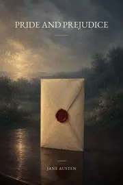
Pride and PrejudiceA truth universally acknowledged.Fiction · 1813 · ~9 hModern English from the original The OdysseyA long way home, by way of every sea-monster between.Poetry · c. 700 BC · ~9 hModern English from Samuel Butler, 1900
The OdysseyA long way home, by way of every sea-monster between.Poetry · c. 700 BC · ~9 hModern English from Samuel Butler, 1900- FrankensteinThe first science-fiction novel, written at nineteen.Fiction · 1818 · ~5 hModern English from the original
Philosophy 21
 ApologyPhilosophy · c. 399 BC · ~1 hModern English from Benjamin Jowett, 1871
ApologyPhilosophy · c. 399 BC · ~1 hModern English from Benjamin Jowett, 1871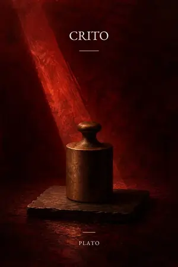
CritoPhilosophy · c. 399 BC · 33 minModern English from Benjamin Jowett, 1871 PhaedoPhilosophy · c. 385 BC · ~3 hModern English from Benjamin Jowett, 1871
PhaedoPhilosophy · c. 385 BC · ~3 hModern English from Benjamin Jowett, 1871 The RepublicPhilosophy · c. 375 BC · ~9 hModern English from Benjamin Jowett, 1871
The RepublicPhilosophy · c. 375 BC · ~9 hModern English from Benjamin Jowett, 1871 PhaedrusPhilosophy · c. 370 BC · ~2 hModern English from Benjamin Jowett, 1871
PhaedrusPhilosophy · c. 370 BC · ~2 hModern English from Benjamin Jowett, 1871 Nicomachean EthicsPhilosophy · c. 350 BC · ~7 hModern English from D.P. Chase, 1847
Nicomachean EthicsPhilosophy · c. 350 BC · ~7 hModern English from D.P. Chase, 1847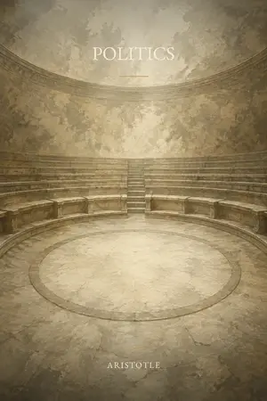
PoliticsPhilosophy · c. 335 BC · ~7 hModern English from Benjamin Jowett, 1885 PoeticsPhilosophy · c. 335 BC · ~1 hModern English from S. H. Butcher, 1895
PoeticsPhilosophy · c. 335 BC · ~1 hModern English from S. H. Butcher, 1895 The ManualPhilosophy · c. 125 AD · 43 minModern English from George Long, 1877
The ManualPhilosophy · c. 125 AD · 43 minModern English from George Long, 1877- MeditationsPhilosophy · c. 175 AD · ~3 hModern English from George Long, 1862
 ConfessionsPhilosophy · c. 400 AD · ~7 hModern English from Edward Bouverie Pusey, 1838
ConfessionsPhilosophy · c. 400 AD · ~7 hModern English from Edward Bouverie Pusey, 1838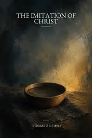
The Imitation of ChristScripture · 1418 · ~4 hModern English from the original EssaysPhilosophy · 1580 · ~25 hModern English from Charles Cotton, ed. William Hazlitt, 1877
EssaysPhilosophy · 1580 · ~25 hModern English from Charles Cotton, ed. William Hazlitt, 1877 Meditations on First PhilosophyPhilosophy · 1641 · ~2 hModern English from John Veitch, 1901
Meditations on First PhilosophyPhilosophy · 1641 · ~2 hModern English from John Veitch, 1901 An Enquiry Concerning Human UnderstandingPhilosophy · 1748 · ~4 hModern English from the original
An Enquiry Concerning Human UnderstandingPhilosophy · 1748 · ~4 hModern English from the original Groundwork of the Metaphysics of MoralsPhilosophy · 1785 · ~2 hModern English from Thomas Kingsmill Abbott, 1879
Groundwork of the Metaphysics of MoralsPhilosophy · 1785 · ~2 hModern English from Thomas Kingsmill Abbott, 1879 Fear and TremblingPhilosophy · 1843 · ~3 hModern English from the original
Fear and TremblingPhilosophy · 1843 · ~3 hModern English from the original- WaldenPhilosophy · 1854 · ~8 hModern English from the original
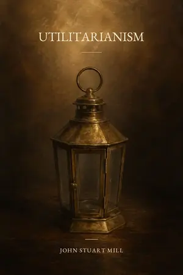
UtilitarianismPhilosophy · 1861 · ~2 hModern English from the original Beyond Good and EvilPhilosophy · 1886 · ~5 hModern English from Helen Zimmern, 1907
Beyond Good and EvilPhilosophy · 1886 · ~5 hModern English from Helen Zimmern, 1907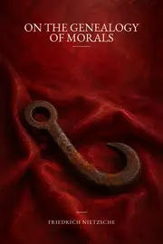
On the Genealogy of MoralsPhilosophy · 1887 · ~4 hModern English from Horace B. Samuel, 1913
Politics & The State 11
 Magna CartaHistory · 1215 · 22 minModern English from William Sharp McKechnie, 1914
Magna CartaHistory · 1215 · 22 minModern English from William Sharp McKechnie, 1914 The PrincePolitical · 1532 · ~2 hModern English from W.K. Marriott, 1908
The PrincePolitical · 1532 · ~2 hModern English from W.K. Marriott, 1908 LeviathanPolitical · 1651 · ~14 hModern English from the original
LeviathanPolitical · 1651 · ~14 hModern English from the original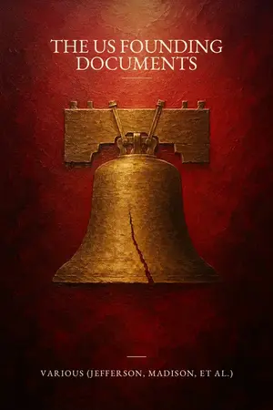
The US Founding DocumentsHistory · 1776–1791 · ~2 hModern English from the original The Wealth of NationsPolitical · 1776 · ~25 hModern English from the original
The Wealth of NationsPolitical · 1776 · ~25 hModern English from the original The Federalist PapersPolitical · 1788 · ~13 hModern English from the original
The Federalist PapersPolitical · 1788 · ~13 hModern English from the original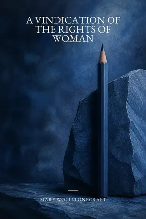
A Vindication of the Rights of WomanPolitical · 1792 · ~6 hModern English from the original Democracy in AmericaPolitical · 1835 · ~18 hModern English from Henry Reeve, revised by Francis Bowen, 1862
Democracy in AmericaPolitical · 1835 · ~18 hModern English from Henry Reeve, revised by Francis Bowen, 1862 Narrative of the Life of Frederick DouglassMemoir · 1845 · ~3 hModern English from the original
Narrative of the Life of Frederick DouglassMemoir · 1845 · ~3 hModern English from the original The Communist ManifestoPolitical · 1848 · 52 minModern English from Samuel Moore (edited by Engels), 1888
The Communist ManifestoPolitical · 1848 · 52 minModern English from Samuel Moore (edited by Engels), 1888 On LibertyPolitical · 1859 · ~3 hModern English from the original
On LibertyPolitical · 1859 · ~3 hModern English from the original
Drama 30
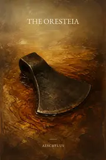
The OresteiaDrama · 458 BC · ~2 hModern English from E. D. A. Morshead, 1881 AntigoneDrama · c. 441 BC · ~1 hModern English from Francis Storr, 1912
AntigoneDrama · c. 441 BC · ~1 hModern English from Francis Storr, 1912 MedeaDrama · 431 BC · 48 minModern English from Arthur S. Way, 1894
MedeaDrama · 431 BC · 48 minModern English from Arthur S. Way, 1894- Oedipus RexDrama · c. 429 BC · ~1 hModern English from Francis Storr, 1912
 Oedipus at ColonusDrama · c. 406 BC · ~1 hModern English from Francis Storr, 1912
Oedipus at ColonusDrama · c. 406 BC · ~1 hModern English from Francis Storr, 1912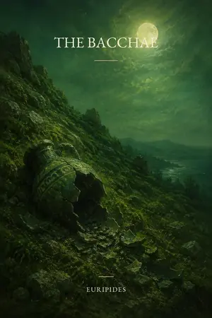
The BacchaeDrama · c. 405 BC · 59 minModern English from Arthur S. Way, 1898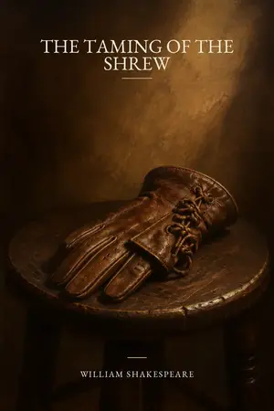
The Taming of the ShrewDrama · c. 1592 · ~2 hModern English from the original- Richard IIIDrama · c. 1593 · ~2 hModern English from the original
 The Comedy of ErrorsDrama · c. 1594 · ~1 hModern English from the original
The Comedy of ErrorsDrama · c. 1594 · ~1 hModern English from the original A Midsummer Night's DreamDrama · 1595 · ~1 hModern English from the original
A Midsummer Night's DreamDrama · 1595 · ~1 hModern English from the original Romeo and JulietDrama · 1597 · ~2 hModern English from the original
Romeo and JulietDrama · 1597 · ~2 hModern English from the original The Merchant of VeniceDrama · c. 1597 · ~2 hModern English from the original
The Merchant of VeniceDrama · c. 1597 · ~2 hModern English from the original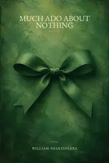
Much Ado About NothingDrama · c. 1599 · ~2 hModern English from the original Henry VDrama · 1599 · ~2 hModern English from the original
Henry VDrama · 1599 · ~2 hModern English from the original Julius CaesarDrama · 1599 · ~2 hModern English from the original
Julius CaesarDrama · 1599 · ~2 hModern English from the original As You Like ItDrama · c. 1599 · ~2 hModern English from the original
As You Like ItDrama · c. 1599 · ~2 hModern English from the original Henry IV, Part 2Drama · c. 1599 · ~2 hModern English from the original
Henry IV, Part 2Drama · c. 1599 · ~2 hModern English from the original- HamletDrama · 1600 · ~2 hModern English from the original
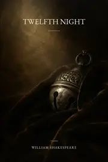
Twelfth NightDrama · c. 1601 · ~2 hModern English from the original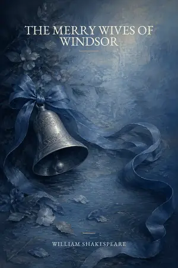
The Merry Wives of WindsorDrama · c. 1602 · ~2 hModern English from the original OthelloDrama · c. 1603 · ~2 hModern English from the original
OthelloDrama · c. 1603 · ~2 hModern English from the original- Measure for MeasureDrama · c. 1604 · ~2 hModern English from the original
 King LearDrama · c. 1606 · ~2 hModern English from the original
King LearDrama · c. 1606 · ~2 hModern English from the original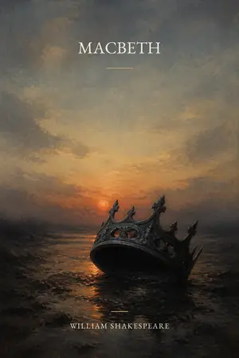
MacbethDrama · 1606 · ~1 hModern English from the original- Antony and CleopatraDrama · c. 1607 · ~2 hModern English from the original
 CoriolanusDrama · c. 1608 · ~2 hModern English from the original
CoriolanusDrama · c. 1608 · ~2 hModern English from the original The Winter's TaleDrama · c. 1611 · ~2 hModern English from the original
The Winter's TaleDrama · c. 1611 · ~2 hModern English from the original The TempestDrama · 1611 · ~1 hModern English from the original
The TempestDrama · 1611 · ~1 hModern English from the original CymbelineDrama · c. 1611 · ~2 hModern English from the original
CymbelineDrama · c. 1611 · ~2 hModern English from the original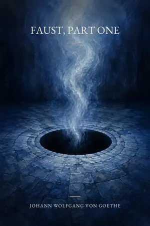
Faust, Part OneDrama · 1808 · ~2 hModern English from Bayard Taylor, 1870
Fiction 32
 Don QuixoteFiction · 1605 · ~31 hModern English from John Ormsby, 1885
Don QuixoteFiction · 1605 · ~31 hModern English from John Ormsby, 1885 CandideFiction · 1759 · ~2 hModern English from William F. Fleming, 1901
CandideFiction · 1759 · ~2 hModern English from William F. Fleming, 1901 The Sorrows of Young WertherFiction · 1774 · ~3 hModern English from R. D. Boylan, 1779
The Sorrows of Young WertherFiction · 1774 · ~3 hModern English from R. D. Boylan, 1779 Sense and SensibilityFiction · 1811 · ~9 hModern English from the original
Sense and SensibilityFiction · 1811 · ~9 hModern English from the original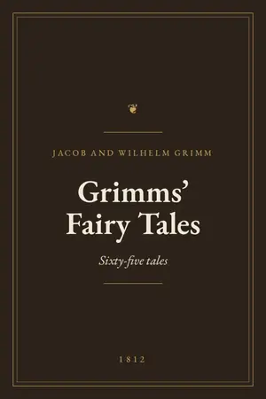
Grimms’ Fairy TalesShort-stories · 1812 · ~7 hModern English from Edgar Taylor and Marian Edwardes- Pride and PrejudiceFiction · 1813 · ~9 hModern English from the original
- FrankensteinFiction · 1818 · ~5 hModern English from the original
 Jane EyreFiction · 1847 · ~14 hModern English from the original
Jane EyreFiction · 1847 · ~14 hModern English from the original Wuthering HeightsFiction · 1847 · ~8 hModern English from the original
Wuthering HeightsFiction · 1847 · ~8 hModern English from the original- Moby DickFiction · 1851 · ~15 hModern English from the original
 Great ExpectationsFiction · 1861 · ~13 hModern English from the original
Great ExpectationsFiction · 1861 · ~13 hModern English from the original- Notes from UndergroundFiction · 1864 · ~3 hModern English from Constance Garnett, 1918
 Alice's Adventures in WonderlandFiction · 1865 · ~2 hModern English from the original
Alice's Adventures in WonderlandFiction · 1865 · ~2 hModern English from the original- Crime and PunishmentFiction · 1866 · ~15 hModern English from Constance Garnett, 1914
 War and PeaceFiction · 1869 · ~41 hModern English from Aylmer & Louise Maude, 1922
War and PeaceFiction · 1869 · ~41 hModern English from Aylmer & Louise Maude, 1922 MiddlemarchFiction · 1871 · ~23 hModern English from the original
MiddlemarchFiction · 1871 · ~23 hModern English from the original Around the World in Eighty DaysFiction · 1873 · ~5 hModern English from George Towle, 1873
Around the World in Eighty DaysFiction · 1873 · ~5 hModern English from George Towle, 1873- Anna KareninaFiction · 1877 · ~25 hModern English from Constance Garnett, 1901
 The Brothers KaramazovFiction · 1880 · ~26 hModern English from Constance Garnett, 1912
The Brothers KaramazovFiction · 1880 · ~26 hModern English from Constance Garnett, 1912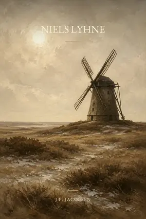
Niels LyhneFiction · 1880 · ~5 hModern English from Hanna Astrup Larsen, 1919 The Adventures of PinocchioFiction · 1881–1883 · ~3 hModern English from the original
The Adventures of PinocchioFiction · 1881–1883 · ~3 hModern English from the original Strange Case of Dr Jekyll and Mr HydeFiction · 1886 · ~2 hModern English from the original
Strange Case of Dr Jekyll and Mr HydeFiction · 1886 · ~2 hModern English from the original The Death of Ivan IlyichFiction · 1886 · ~1 hModern English from Louise & Aylmer Maude
The Death of Ivan IlyichFiction · 1886 · ~1 hModern English from Louise & Aylmer Maude The Jungle BookFiction · 1894 · ~4 hModern English from the original
The Jungle BookFiction · 1894 · ~4 hModern English from the original The Arabian Nights EntertainmentsShort-stories · 1898 · ~8 hModern English from the original
The Arabian Nights EntertainmentsShort-stories · 1898 · ~8 hModern English from the original The AwakeningFiction · 1899 · ~4 hModern English from the original
The AwakeningFiction · 1899 · ~4 hModern English from the original Heart of DarknessFiction · 1899 · ~3 hModern English from the original
Heart of DarknessFiction · 1899 · ~3 hModern English from the original JerusalemFiction · 1901 · ~7 hModern English from Velma Swanston Howard, 1915
JerusalemFiction · 1901 · ~7 hModern English from Velma Swanston Howard, 1915 A Little PrincessFiction · 1905 · ~5 hModern English from the original
A Little PrincessFiction · 1905 · ~5 hModern English from the original UlyssesFiction · 1922 · ~19 hModern English from the original
UlyssesFiction · 1922 · ~19 hModern English from the original To the LighthouseFiction · 1927 · ~5 hModern English from the original
To the LighthouseFiction · 1927 · ~5 hModern English from the original The Master and MargaritaFiction · 1928–1940 · ~11 hModern English from the original
The Master and MargaritaFiction · 1928–1940 · ~11 hModern English from the original
Poetry & Epic 6
 The IliadPoetry · c. 750 BC · ~11 hModern English from Samuel Butler, 1898
The IliadPoetry · c. 750 BC · ~11 hModern English from Samuel Butler, 1898- The OdysseyPoetry · c. 700 BC · ~9 hModern English from Samuel Butler, 1900
 The AeneidPoetry · c. 19 BC · ~8 hModern English from John Dryden, 1697
The AeneidPoetry · c. 19 BC · ~8 hModern English from John Dryden, 1697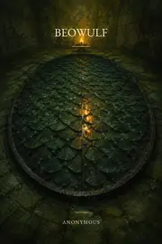
BeowulfPoetry · c. 1000 · ~2 hModern English from J. Lesslie Hall, 1892 The Divine ComedyPoetry · 1320 · ~8 hModern English from Henry Wadsworth Longfellow, 1867
The Divine ComedyPoetry · 1320 · ~8 hModern English from Henry Wadsworth Longfellow, 1867- Paradise LostPoetry · 1667 · ~6 hModern English from the original
History 2

War & Strategy 1
Nothing on the shelves by that name. Try the author.
About these editions
Each modern-English edition is made with AI, page by page, from the original text or from the older translation named under the book. It is a way into the book, not a scholarly translation, so the original stays with it: in the reader, one tap switches back at the same line, and on a computer the two sit side by side.
Select any passage to have it explained, simplified, or to ask about it.
No text is beyond you.
See how Tinct works